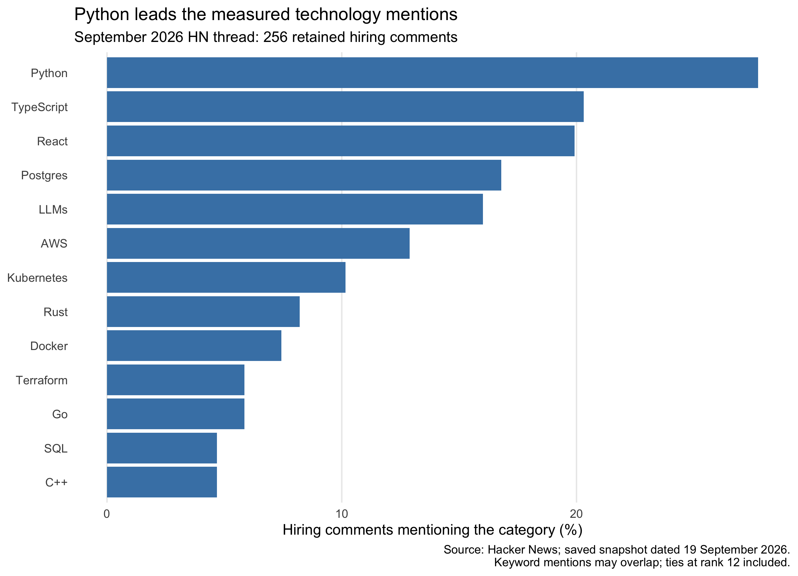

Show code
knitr::include_graphics(file.path(POST_DIR, "results", "figures", "skill_share_2026.png"))
Yipin Zhang
September 21, 2026
The fact that I studied R led me to question how classroom programming stacks up against the technologies referred to in job advertisements. For a person looking into technology careers, would learning Python, web development, or cloud infrastructure be a useful next move? I collected two of the Hacker News “Who is hiring?” threads and then compared them using a fixed list of 20 technology categories. Python is mentioned in 27.7% of the hiring comments that remained from September 2026, which is the highest proportion among the categories in question, while I was surprised to find out that R appears in 0 of 256 postings. Python is a reasonable place to start for this kind of job. However, the analysis does not indicate which skill will yield the highest payoff or increase an individual’s chances of getting an offer.
The sources are the September 2025 and September 2026 threads. The saved acquisition metadata are dated 19 September 2026. My R scraper uses rvest to extract public HTML, caches pages, and waits 30 seconds after each new page request. The current robots.txt specifies that delay and does not disallow /item. The workflow does not bypass logins, paywalls, or CAPTCHAs. Hacker News also provides an official API, which would ordinarily be preferable; HTML extraction is used here to practise the assignment’s required rvest workflow. Reproducing the saved analysis needs no new requests.
The files contain 863 comments, some of which are replies. I kept the top-level comments that include text, removed duplicate comment IDs, and excluded 10 entries identified during review as discussions, personal job-seeking or service offers, or insufficiently informative content. The final dataset consists of 294 hiring comments from 2025 and 256 from 2026. The IDs of the excluded entries together with the reasons for their exclusion are saved with the code. Each comment is counted only once even if it promotes more than one job; likewise, the same employer can be listed more than once.
Keyword matching also has to be checked. I only caught the “Go” bug because its count jumped from 26 to 42 between two runs on identical data, triggered by phrases like “Go for it” and “Go-To-Market”. Updating the matching rules resolved those false positives and captured the all-caps GO spelling. For the other options, the criteria are intentionally kept narrow: SQL counts the single term, while Postgres includes PostgreSQL. It is not appropriate to add the percentages since comments can refer to both. These adjustments cover mentions such as company technology stacks, not the verified requirements for each advertised role.
TypeScript and React make up 20.3% and 19.9% of the retained comments from 2026, respectively. Their proportions are 8.3 and 8.0 percentage points lower than in the 2025 snapshot. These are the observed differences, not an indication of a widespread decline in demand for web development.
Comparing two September threads eliminates one aspect of the seasonal mismatch by using the same calendar month, but it does not keep the hiring population constant. The September 2026 data was still incomplete at the time of collection, and each thread includes different employers and positions. Because this is a self-selecting online community, not a random selection of jobs, keyword rules may also miss abbreviations or count occasional references. For these reasons I give the comparison only a descriptive account rather than treating these differences as evidence about the wider labour market.
If a student is already using R and wants to learn about the types of jobs listed here, I suggest they create a small Python project by obtaining data, cleaning it, and publishing a reproducible analysis. While Python is prominent, such a project should be seen as a reasonable experiment rather than a sure way to secure a job. Alternatively, a student aiming for a career in web development could build a TypeScript/React application, since both are still frequently mentioned even though they have lower proportions in this comparison.
Before you decide on a longer course, look at a selection of advertisements that correspond to your location, level of experience, and the position you want. Determine which technologies are essential and which only refer to the employer’s technology stack. This matters because the dataset includes senior engineering positions, junior ones, and non-technical roles. The lack of a verified R keyword match in this case does not prove that R is unimportant for jobs in economics or statistics.
| Category | 2025 count | 2025 (%) | 2026 count | 2026 (%) | Change (pp) |
|---|---|---|---|---|---|
| Python | 79 | 26.9 | 71 | 27.7 | 0.9 |
| TypeScript | 84 | 28.6 | 52 | 20.3 | -8.3 |
| React | 82 | 27.9 | 51 | 19.9 | -8.0 |
| Postgres | 46 | 15.6 | 43 | 16.8 | 1.2 |
| LLMs | 39 | 13.3 | 41 | 16.0 | 2.8 |
| AWS | 41 | 13.9 | 33 | 12.9 | -1.1 |
| Kubernetes | 27 | 9.2 | 26 | 10.2 | 1.0 |
| Rust | 20 | 6.8 | 21 | 8.2 | 1.4 |
| Docker | 16 | 5.4 | 19 | 7.4 | 2.0 |
| Go | 26 | 8.8 | 15 | 5.9 | -3.0 |
| Terraform | 17 | 5.8 | 15 | 5.9 | 0.1 |
| C++ | 17 | 5.8 | 12 | 4.7 | -1.1 |
| SQL | 11 | 3.7 | 12 | 4.7 | 0.9 |
| JavaScript | 10 | 3.4 | 11 | 4.3 | 0.9 |
| Java | 11 | 3.7 | 8 | 3.1 | -0.6 |
| Machine learning | 17 | 5.8 | 8 | 3.1 | -2.7 |
| Ruby | 12 | 4.1 | 6 | 2.3 | -1.7 |
| Scala | 2 | 0.7 | 2 | 0.8 | 0.1 |
| Spark | 2 | 0.7 | 2 | 0.8 | 0.1 |
| R | 0 | 0.0 | 0 | 0.0 | 0.0 |
Python is a practical first language for students exploring this hiring community. Use the ranking to select the ads and skills to review, then check the actual positions. Although two scraped threads can help you make a well-focused decision, they cannot show what all employers want.
Code, data, and replication instructions: GitHub repository.